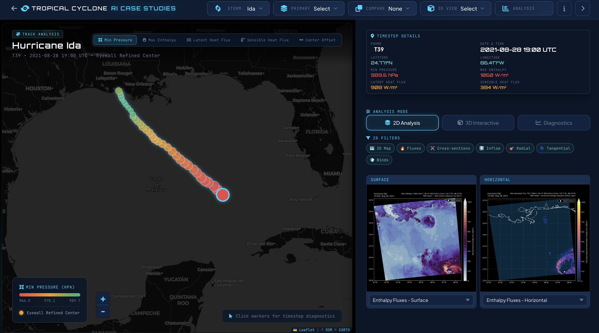
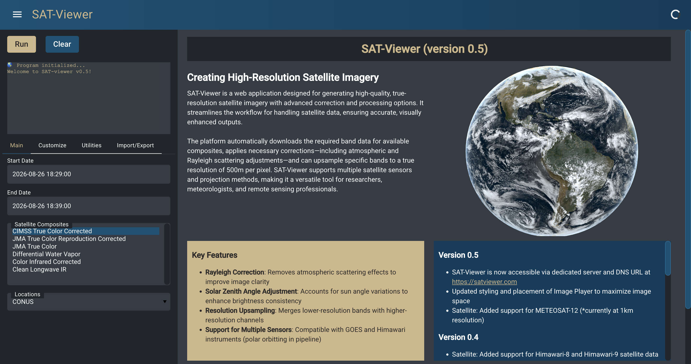
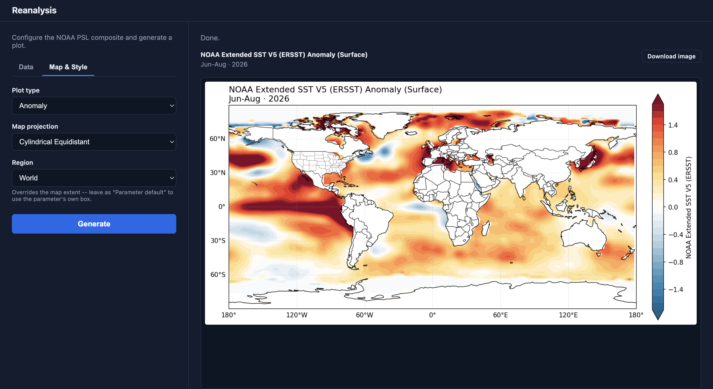
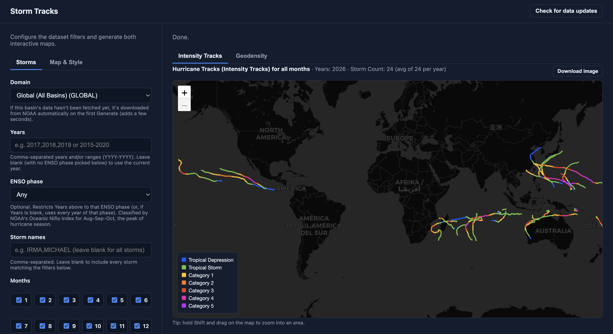
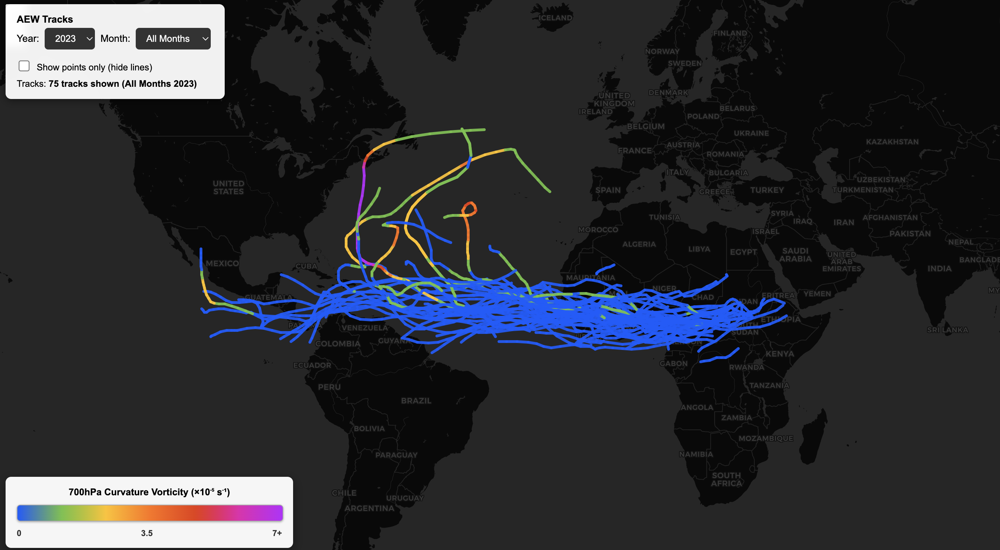
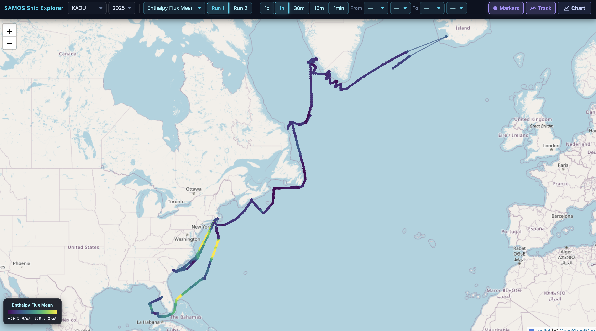

Tropical Cyclone RI Cases
Rapid Intensification case study explorer — interactive WRF-derived storm structure and moist enthalpy flux visualizations.

Satellite Viewer
Browse and animate satellite imagery for tropical cyclone events.

Reanalysis
Gridded reanalysis dataset explorer for atmospheric and ocean fields.

Storm Tracks
Historical tropical cyclone track browser and comparison tool.

Tropical Wave Tracker
Interactive African Easterly Wave track explorer, 1979–2023.

SAMOS Ship Uncertainty
Explore observational uncertainty in SAMOS ship-based flux measurements.